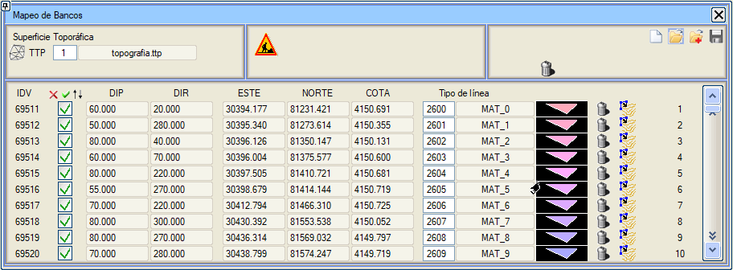
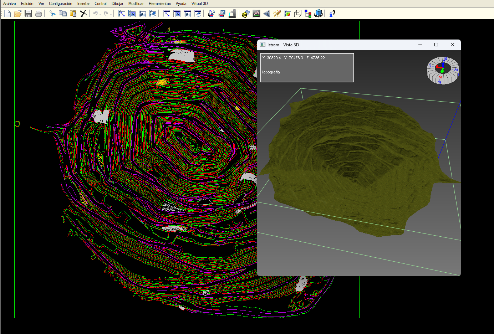
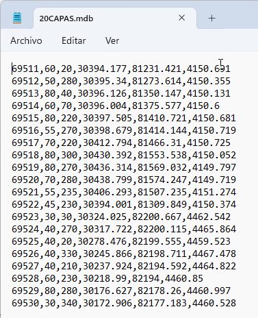
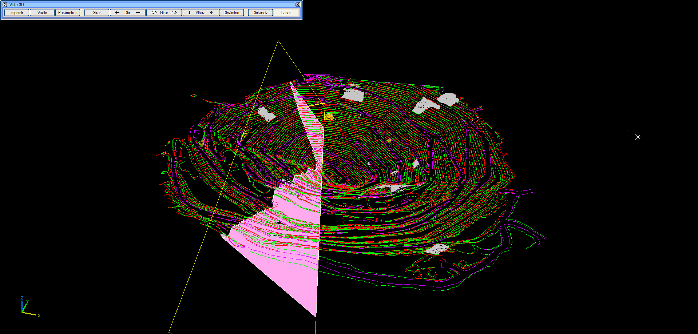

| |
|
DAMAR HARİTALAMASI
|
|
Bu menü, "sonsuz" bir düzlem oluşturmaya ve bu düzlemin bir topografik yüzeyle kesişimini hesaplamaya olanak tanır.
 |
|
Bir arazi modelinden yola çıkılır. Eğer bu model bir .dxf dosyasından geliyorsa, Topografya menüsünden içe aktarılmalı ve bir ttp yüzeyi oluşturulmalıdır.  Diğer yandan .mdb uzantılı dosyalarınız olacaktır. Bu dosyalar, virgülle ayrılmış 6 sütununu kullanacağımız diğer .csv dosyalarının bir parçasıdır:
 Her satır bir düzlem tanımlar.  Bu araç, bu verilerin her biri için, düzlemin arazi ile kesişimiyle harita üzerinde temsil edilen ve daha düşük bir kot ile kapatılmış bir düzlem oluşturmaya olanak tanır.  |